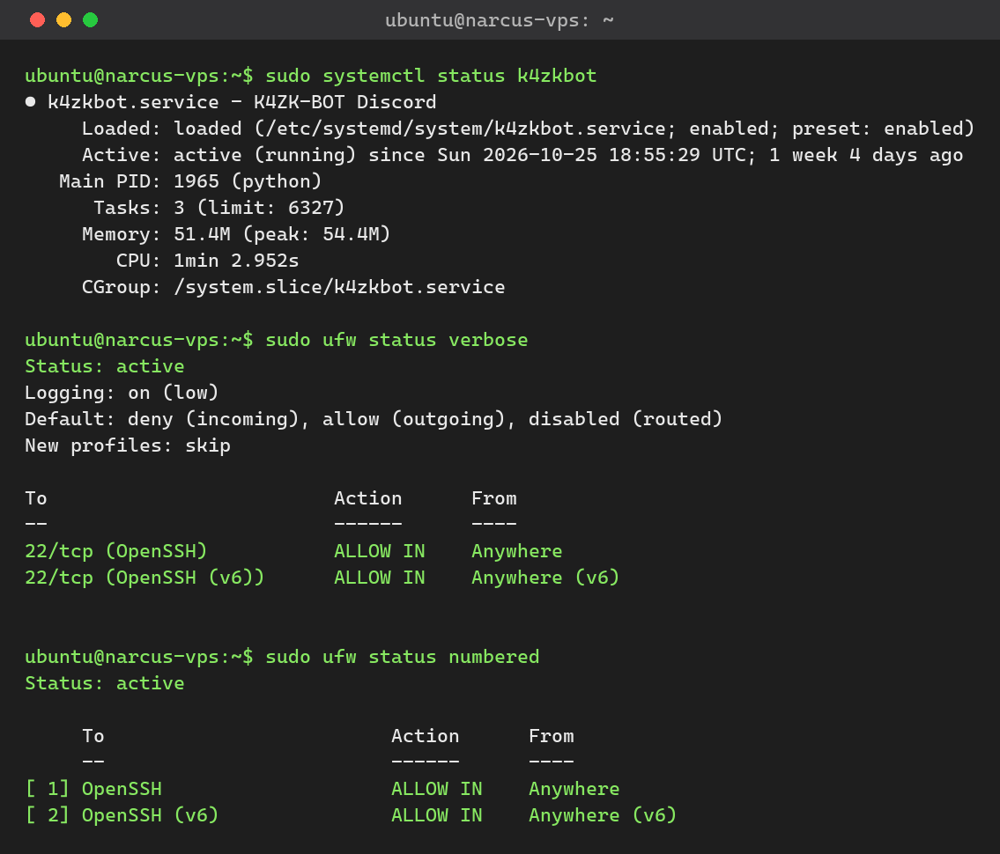

KAZOKU-BOT : un service Discord maintenu en production sur un VPS durci
Bot d'administration et de surveillance de serveur Discord, auto-hébergé sur un VPS Linux que j'ai sécurisé et que je maintiens : pare-feu, SSH par clés, application des correctifs et supervision.
01Contexte
Administrateur d'un serveur Discord communautaire, j'ai développé KAZOKU-BOT pour automatiser sa gestion : surveillance, journaux d'événements et commandes d'administration. Plutôt que d'utiliser un bot d'hébergeur tiers, j'ai choisi de l'auto-héberger sur mon propre VPS — ce qui m'oblige à assumer la chaîne complète : système, réseau, sécurité et exploitation.
C'est un vrai service en production, disponible 24h/24 : une indisponibilité se voit immédiatement. Cela impose des gestes d'administrateur systèmes concrets — durcissement, mises à jour, supervision et remédiation.
02Architecture
Le bot tourne comme un service Linux sur le VPS, n'expose aucun port public autre que SSH (restreint), et dialogue avec l'API Discord en HTTPS sortant.

k4zkbot tourne en continu sous systemd, et le pare-feu n'expose que SSH en entrée — tout le reste est bloqué par défaut.03Réalisation
- Installation du serveur : système Linux minimal sur VPS, partitionnement et création d'un utilisateur non-root pour l'exploitation.
- Durcissement SSH : authentification par clés uniquement (mots de passe désactivés), connexion root interdite.
- Pare-feu : politique par défaut de refus, seuls les flux nécessaires sont autorisés.
- Développement du bot : Python — commandes d'administration du serveur, surveillance et journalisation des événements.
- Mise en production : exécution comme service systemd (
k4zkbot) avec redémarrage automatique, indépendant de ma session. - Maintenance continue : application des correctifs système, vérification des journaux et supervision de l'état du service.
04Sécurité appliquée
- Réduction de la surface d'attaque : services installés au strict minimum, ports exposés réduits.
- SSH par clés : suppression de l'authentification par mot de passe — attaque par force brute rendue inopérante.
- Moindre privilège : le bot ne tourne pas en root, avec seulement les droits dont il a besoin.
- Patch management : correctifs de sécurité appliqués régulièrement pour réduire la fenêtre d'exposition.
- Supervision & journaux : suivi des logs système et applicatifs pour détecter tout comportement anormal.